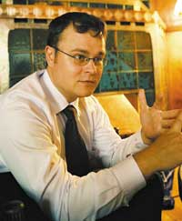

|  | Интервью Михаила Фечина, менеджера корпорации Intel по развитию рынка мобильных и беспроводных технологий в СНГ, редактору отдела аппаратных средств "BYTE/Россия" Александру Николову, посвящено развитию мобильной платформы Centrino - новым устройствам, процессорам, наборам системных микросхем, элементам питания, средствам беспроводной связи. |
"BYTE/Россия": Михаил, наш первый вопрос посвящен перспективам мобильной платформы Centrino - каковы основные направления ее дальнейшего развития, общие тенденции и задачи на ближайшее будущее?
Михаил Фечин: Немного углубившись в историю, напомню, что, перед тем как выпустить на рынок технологию Intel Centrino для мобильных ПК, компания Intel провела достаточно обширные исследования потребительских предпочтений среди пользователей мобильных систем, результатом которых стали интересные сведения. Оказалось, потребители мобильных платформ хотели бы, чтобы их устройства обладали как минимум четырьмя основными свойствами: первое - высокой производительностью, поскольку сейчас мало кто готов идти на компромисс в этом вопросе, даже если речь идет о мобильных ПК; второе - беспроводным функционалом, поскольку пользователи хотят не только работать со своими локальными данными, но и получать доступ к удаленным данным; третье - длительным временем работы от батареи и четвертое - минимальными размерами устройства. Эти свойства вышли на передний план, и для себя Intel назвала их "четыре вектора мобильности". Таким образом, любая новая ступень развития технологии Centrino, будь то представленное в 2005 г. обновление под кодовым именем Sonoma или ожидаемое в первой половине 2006 г. обновление под кодовым именем Napa, есть дальнейшее развитие идей, заложенных в данную платформу изначально.
Известно, что платформа Centrino состоит из трех функциональных блоков: процессора, набора системных микросхем и беспроводного телекоммуникационного модуля. Безусловно, каждая из этих составляющих будет развиваться с тем, чтобы максимально соответствовать четырем обозначенным выше потребительским свойствам: они будут становиться еще более оптимизированными по энергопотреблению, еще более производительными - следующее поколение процессоров, известное под кодовым наименованием Yonah и относящееся к платформе Napa, включает и двухъядерные модели, системы на их базе будут становиться еще компактнее, а время автономной работы от батарей будет расти. На данный момент перед нами стоит цель довести время автономной работы от одной зарядки стандартной 6- или 8-ячеечной батареи до 8 ч, т. е. полного рабочего дня.
"BYTE/Россия": По поводу уменьшения габаритов конечных устройств возникает вопрос - насколько далеко готова зайти компания в этом плане?
М. Ф.: То, что я видел в лабораториях, на самом деле впечатляет - наши партнеры достигли существенных успехов в этом направлении. В частности, компания LG продемонстрировала устройство толщиной примерно 6 мм, построенное на базе нового процессора со сверхнизким энергопотреблением (ULV) и пассивным охлаждением. Несомненно, миниатюризация устройств будет продолжаться и дальше. Уже сейчас есть класс сверхпортативных устройств, куда, например, входят устройства компании ASUS из семейств S200 и S300, продукция компании Toshiba из семейства Libretto и другие модели, размеры которых в первом приближении можно сравнить с величиной мини-DVD-плеера. Однако на сегодняшний момент такие устройства позиционируются лишь как нишевые.
На новосибирском, киевском и московском IDF мы, обсуждая планы на 2006 г., объявили в том числе и о появлении нового класса устройств с условным названием entertainment on the go, к которому относятся очень компактные устройства, позволяющие выходить в Интернет посредством не только традиционного беспроводного интерфейса Wi-Fi, но и с использованием инфраструктуры сотовых сетей, в частности, протоколов GPRS и EDGE. Кроме того, подобные устройства также реализуют определенный GPS-функционал, предоставляя пользователям комплекс услуг location base services - например, поиск ближайшей в городе гостиницы с учетом текущих координат пользователя.
"BYTE/Россия": Я так понимаю, что это устройство вписывается в стандартный форм-фактор современного ноутбука - в виде раскрывающейся книжечки?
М. Ф.: Нет, это скорее планшетное устройство. Подобные устройства не зря выделены в отдельный класс - в них содержится множество технических решений, подчас даже незаметных пользователю с первого взгляда, но призванных максимально облегчить его работу и сделать ее максимально комфортной. Скажем, специальные детекторы определяют внешнюю освещенность и автоматически подстраивают уровень яркости дисплея в зависимости от условий. Это, кстати, не только повышает комфортность работы, но и позволяет экономить энергию при хорошем освещении. Конечно, регулировка яркости имеется и в существующих сегодня ноутбуках, однако вся тонкость - в автоматизации этого процесса, в перекладывании несущественных деталей, не требующих внимания пользователя, на плечи машины.
"BYTE/Россия": Михаил, скажите, а не планируется ли расширить сферу применения платформы Centrino и использовать ее в так называемых носимых компьютерах?
М. Ф.: Безусловно, носимые устройства - это достаточно близкое будущее, ведь уже сейчас доступны очень неплохие прототипы, и работы в этом направлении, безусловно, ведутся. Как известно, Intel не только создает устройства для удовлетворения текущих потребностей рынка, но зачастую и формирует сами эти рынки. Как только устройства индивидуального отображения информации станут более-менее массовыми и доступными, появится соответствующий форм-фактор. Однако тут следует помнить и о необходимости оптимизации готовых решений, поскольку для подобного рода устройств очень неплохим выбором будет процессор на базе микроархитектуры Intel XScale, который уже сейчас по уровню производительности сравним с семейством Pentium III. Для многих типовых задач большей мощности и не надо. Примером тому могут служить смартфоны и коммуникаторы.
"BYTE/Россия": Однако смартфоны и коммуникаторы - это все же несколько иной класс устройств, их вряд ли можно назвать полноценными персональными компьютерами.
М. Ф.: Пожалуй, что так. Что же касается именно носимых компьютеров, то тут есть несколько существенных особенностей, дополнительно сдерживающих их массовое распространение. Прежде всего это менталитет пользователей - очень многие привыкают к какому-то определенному способу взаимодействия со своим ПК, в частности, к способу ввода информации, и в дальнейшем продолжают цепляться за него всеми правдами и неправдами. Ведь носимые устройства уже есть на рынке, но дальше своей обособленной ниши они пока никак не могут выбраться.
"BYTE/Россия": Ну что ж, понятно, что работы ведутся и можно ожидать достаточно скорого появления массовых образцов. Но как скоро? Десять лет? Пять? Сколько, хотя бы примерно, по Вашим оценкам?
М. Ф.: Я думаю, это вполне может быть даже быстрее. Вот, например, очень активно развивается направление, связанное с использованием процессоров Pentium M в настольных ПК сверхмалого форм-фактора, образцы появляются практически на всех крупных выставках - и на Computex, и на CeBIT, и на нашем IDF. Фактически это такие крошечные коробочки с пассивным охлаждением, которые играют роль настольного ПК, обладая практически равной с ним производительностью. А отсюда и до носимых систем недалеко.
"BYTE/Россия": Хотелось бы знать, станут ли эти "крошечные коробочки" реально продаваемыми продуктами или так и останутся лишь демонстрацией возможностей?
М. Ф.: На данном этапе это концептуальные продукты. Но как только мы выпустим следующую платформу, ориентированную на "цифровой дом", потребители наконец-то их увидят. На самом деле это скорее вопрос экономики отрасли. Патрик Гелсингер, глава Digital Enterprise Group, отвечая на вопрос о том, можно ли сейчас использовать Pentium M в настольных системах, дал следующий комментарий - процессор Pentium M в форм-факторе малых настольных ПК требует использования шестислойных системных плат, а такие платы в производстве на 10 долл. дороже четырехслойных, поэтому далеко не каждый производитель считает для себя оптимальным выпуск подобных продуктов с точки зрения массового рентабельного производства. Так что процессоры Pentium M действительно можно использовать в настольных системах, никаких технических ограничений для этого нет, а вот экономических пока что более чем достаточно.
"BYTE/Россия": Вот, кстати, давайте перейдем к этому процессору более предметно. Хотелось бы поговорить об архитектуре Pentium M, о том, какие концептуальные изменения ожидаются в ближайших его поколениях - многоядерность, повышение тактовых частот, увеличение кэша, интеграция контроллеров памяти и ввода-вывода в кристалл…
М. Ф.: Ближайшее обновление компонентов платформы Centrino, известное под кодовым именем Napa и ожидаемое, как я уже говорил, в первой половине 2006 г., в числе прочего будет включать и двухъядерный процессор Yonah, оснащенный 2-Мбайт совместным кэшем второго уровня. Каждое его ядро сможет использовать определенную область этого кэша, причем размер данной области будет меняться динамически, в зависимости от того, какой поток инструкций идет через ядра. В тех случаях, когда одно из ядер не будет востребовано, для экономии энергии оно будет динамически отключаться. Некоторые другие подсистемы процессора, в том числе неиспользуемые блоки кэша, тоже будут переводиться в режим ожидания с пониженным энергопотреблением или полным отключением питания, когда в них не будет потребности.
Контроллер памяти в процессор, скорее всего, интегрироваться не будет. В свое время существовал такой проект, но он так и не был доведен до реального воплощения по одной простой причине - продукты подобного рода очень негибки, и любое изменение в платформе влечет за собой необходимость редизайна ядра и смены выпускаемой процессорной продукции. То же самое можно сказать и относительно контроллеров ввода-вывода. Известно, что Intel прилагает много усилий к развитию периферийных интерфейсов: например, одновременно с появлением обновления компонентной базы платформы Centrino, известного как Sonoma, был осуществлен переход на шину PCI Express и введен новый форм-фактор карт расширения - на смену картам PCMCIA пришел формат Express Cards, позволяющий избавиться от множества связующих микросхем, что стало для индустрии огромным шагом вперед. Подобное нововведение позволяет удешевить и производство конечных продуктов, и их обслуживание и, естественно, добавляет гораздо больше функционала - карты Express Cards фактически интегрируют в себе два интерфейса: USB 2.0 и PCI Express. И под тот, и под другой есть программный стек на уровне операционных систем Windows и Linux, так что писать дополнительные драйверы теперь не нужно; соответственно, новые продукты будут выходить на рынок гораздо быстрее. Очевидно, что подобные инновации в рамках высокоинтегрированных продуктов внедрять гораздо труднее, поэтому мы предпочитаем сохранять традиционную системную компоновку, разумно разделяя функции между процессором и набором системных микросхем.
"BYTE/Россия": Достаточно важен, с нашей точки зрения, вопрос о максимальных частотах будущих процессоров. Каковы тенденции в этом вопросе - будет ли частота расти и дальше, каковы вообще пределы этого роста для платформы Centrino?
М. Ф.: На данный момент частота более не является актуальным показателем производительности как для мобильных систем, так и для настольных. Безусловно, частота процессоров платформы Centrino будет расти, однако далеко не такими темпами, как это было в последние четыре года в целом по индустрии. Сейчас на передний план выходят иные способы повышения производительности. Для примера: процессор Yonah будет выпускаться с применением 65-нм технологических норм, что позволит интегрировать на кристалле еще большее число транзисторов. Можно использовать их для создания одного большого ядра, в котором будет повышена тактовая частота и увеличен размер кэш-памяти, пусть даже при значительном росте тепловыделения. А можно разместить на одном кристалле несколько ядер, оставаясь при этом практически в том же термическом пакете, и получить за счет исполнения нескольких вычислительных потоков одновременно гораздо большую производительность. Мы выбрали второй путь, и совершенно официально могу заявить, что Intel будет придерживаться стратегии многоядерности во всех сегментах процессорного рынка.
"BYTE/Россия": Итак, ближайшее будущее мобильных процессоров очевидно - двухъядерные модели увидят свет в первой половине 2006 г. А как дела будут развиваться дальше? Увидим ли мы четырех-, шести-, восьмиядерные процессоры?
М. Ф.: Конечно. Скорее всего, это будут четырех- и восьмиядерные процессоры, хотя возможно появление и шестиядерного кристалла.
"BYTE/Россия": Давайте немного подробнее остановимся на термических характеристиках перспективных процессоров из семейства Pentium M. На текущий момент мы знаем параметры термопакета серийно выпускающихся процессоров, а также имеем некоторое представление об этих параметрах для ближайших ожидаемых моделей. Какие изменения в этой сфере возможны в отдаленной перспективе, учитывая переход к многоядерности и возможный в связи с этим рост тепловыделения?
М. Ф.: Однозначно могу сказать, что параметры термопакета не будут расти. Для мобильной платформы считается оптимальным термальный пакет от 25 до 30 Вт. Любой выход за 30 Вт практически недопустим, все дальнейшие наши разработки не выходят за пределы 25 Вт рассеиваемой мощности. Фактически перед нами стоит задача создать как можно более "холодный" процессор, поскольку в сфере бытовых устройств, в которую мы хотим войти, никто не будет мириться с шумящими устройствами.
"BYTE/Россия": Посмотрим теперь на развитие платформы Centrino с несколько иной стороны. Каковы основные направления дальнейшего развития наборов системных микросхем для мобильных устройств? Ожидается ли интеграция в них каких-то новых функций, например, цифрового ТВ? Как будут обстоять дела с развитием мультимедийных возможностей?
М. Ф.: Уже платформа Sonoma поддерживает ТВ-тюнеры. Вообще говоря, все современные аудиовидеотехнологии, так или иначе доступные на рынке, сегодня мигрировали в компьютерную технику. В частности, если мы говорим о многоканальном звуке, то на данный момент в Centrino поддерживается 8-канальный звук Dolby Surround 7.1, что позволяет решать одновременно несколько задач, например, просмотр DVD-видеофильма и VoIP-соединение, причем без снижения качества воспроизведения звука.
Немного расширяя тематику вопроса, хотел бы отметить, что одна из наиболее интересных тенденций ближайшего будущего - технология виртуализации.
"BYTE/Россия": Тогда вопрос по виртуализации - до какой степени интегрирована технология виртуализации, предлагаемая Intel, в ваше же аппаратное обеспечение?
М. Ф.: В любом случае, когда мы говорим о виртуализации, мы подразумеваем программно-аппаратный комплекс. Все ближайшие продукты, анонсируемые Intel, уже будут учитывать возможности, предлагаемые технологией виртуализации. Intel Virtualization Technology - именно такое официальное название получила наша разработка - будет квинтэссенцией всего самого лучшего, что накоплено на данный момент в области как аппаратного, так и программного обеспечения.
"BYTE/Россия": Потребует ли эта технология изменений в операционных системах?
М. Ф.: Операционные системы, которые будут разрабатываться с учетом этой технологии, безусловно, должны будут соответствовать некоторым критериям.
"BYTE/Россия": Однако вернемся к процессорному окружению. Как, в каком направлении будет развиваться 3D-составляющая - встроенная графика будущих НМС?
М. Ф.: Когда речь заходит об интегрированной графике, важно понимать роль Intel в этом секторе. Несмотря на то что Intel - крупнейший игрок на этом рынке, корпорация не ставит себе задачи конкурировать с поставщиками высокопроизводительных графических систем. Основная задача Intel в области интегрированной графики заключается в том, чтобы предоставить пользователю мэйнстрим-решение - среднее, наиболее доступное на рынке. Заметьте, все то, что мы сейчас видим в области высокопроизводительной графики, через год обычно становится мэйнстрим-решением, так что предсказать, какой будет встроенная графика через тот же год, особого труда не составляет. Так, графическое ядро, которое содержится в наборе микросхем Sonoma, по производительности и уровню поддерживаемых технологий соответствует решениям 2004 г. от ATI и NVIDIA.
Если говорить о разработках, осуществляемых непосредственно Intel, то стоит отметить, что сейчас идет работа над оптимизацией технологии динамического перераспределения видеопамяти, использующей часть ОЗУ для нужд видеоадаптера. Кроме того, поскольку дальнейшее развитие мобильных платформ предполагает переход на ЖК-матрицы с напряжением питания 3 В, ведутся работы для обеспечения их поддержки в решениях Intel. Что касается экранного разрешения, то в этом вопросе, я полагаю, в ближайшее время каких-либо изменений не будет - сегодня мы уже достигли показателей, достаточных для комфортной работы.
"BYTE/Россия": Несколько отвлеченный, но все же весьма важный вопрос - когда можно ожидать замены в мобильных платформах аналогового интерфейса VGA на цифровой DVI?
М. Ф.: Как только он станет массовым.
"BYTE/Россия": Однако в связи с небывалой популяризацией ЖК-мониторов устройства с VGA-интерфейсом уже попадают в разряд исчезающих.
М. Ф.: Дело тут вот в чем. Intel как поставщик так называемых "строительных блоков" уже заложила в набор системных микросхем соответствующий функционал. Более того, в последней ревизии платформы Centrino на уровне микросхем окружения реализован и ТВ-выход - никакого промежуточного цифроаналогового преобразователя больше не требуется. Для производителя конечных систем сейчас нет никаких технических проблем в том, чтобы встроить в свои решения тот или иной интерфейс. Другой вопрос - экономические препятствия. Разные разъемы стоят разных денег, и при больших объемах производства речь идет о сотнях тысяч долларов дополнительных расходов. Таким образом, это скорее вопрос к производителям платформ - вопрос, связанный с их внутренними стратегиями. Например, компания Apple в свое время приняла принципиальное решение о переходе на цифровой интерфейс и отказе от аналоговых разъемов и, осуществляя эту стратегию, внедрила DVI-разъемы во все свои системы, в том числе и в мобильные ПК.
"BYTE/Россия": Следующий вопрос связан с одним из четырех основных концептов мобильной платформы Intel - с энергообеспечением. Сегодняшние аккумуляторные батареи, несомненно, хороши - они способны обеспечить до 8 ч непрерывной работы, а это как-никак полный рабочий день. Однако серьезного прорыва, который даст мобильным пользователям сутки и более непрерывного функционирования их ПК, ожидают от перспективного и модного в последнее время направления - топливных элементов. Как Intel оценивает эту технологию, как участвует в развитии этого направления, есть ли уже результаты?
М. Ф.: Для сведения: на последнем прошедшем в США IDF весь мобильный контент был разбит на несколько частей, и батареям там была посвящена ровно треть. В этом вопросе Intel сотрудничает с множеством производителей, для чего была создана специальная группа Extended Battery Life. Не секрет, что длительность работы от батарей зависит от двух факторов - энергопотребления компонентов системы и физических свойств батареи. Если мы говорим об энергопотреблении компонентов, то здесь Intel так или иначе влияет на очень многие вещи, в частности выступает родоначальником спецификаций. Например, переход от интерфейса Parallel ATA к Serial ATA в два раза снижает напряжение питания. Все это определяет какие-то вводные параметры для оптимизации батарейных технологий. Здесь, в свою очередь, речь идет о двух основных направлениях. Первое - это улучшение физико-химических параметров существующих сейчас технологий, в основном ионно-литиевых: например, оптимизация сечения батарей и использование эллиптических источников питания, на 30% более эффективных, чем круглые. Второе направление - поиск и использование новых технологий, в частности, топливных элементов. Здесь идут достаточно интересные процессы, но, к сожалению, мы пока не можем объединить такие устройства в рамках какого-либо стандарта, который можно было бы ввести в индустрию как базовый. Огромная проблема заключается в регенерации подобных устройств - рабочих циклов у них гораздо меньше, чем у традиционных и широко используемых сейчас ионно-литиевых и никель-металлгидридных элементов. И этот вопрос стоит сейчас на первом месте.
Фактически на сегодняшний момент топливные элементы выступают скорее как некое своеобразное резервное решение, позволяющее продлить время автономной работы в ряде специфических ситуаций. Как массовое решение, готовое к широкому внедрению в конечные потребительские продукты, они еще не готовы.
"BYTE/Россия": Но можно ли ожидать в ближайшие, скажем, пять лет некоей окончательной стандартизации, чтобы пользователи могли приобретать и использовать топливные элементы по своему усмотрению - вместе ли, вместо ли типовых аккумуляторных батарей?
М. Ф.: Стандартизация как таковая уже есть - есть рабочие стандарты для изготовителей топливных элементов. Вопрос опять же упирается в экономическую сторону - да, мы можем создать мобильную платформу, которая будет работать на подобного рода элементах, но нужно иметь в виду, что, помимо топлива к элементу, сам питающий элемент нужно будет менять примерно раз или два в месяц.
"BYTE/Россия": Посмотрим на это с другой точки зрения - когда, по оценкам компании, технология топливных элементов выйдет на приемлемый для пользователей ценовой уровень?
М. Ф.: Сложный вопрос. Пока ничего определенного утверждать я не возьмусь.
"BYTE/Россия": Небольшой вопрос о PAN-сетях. На данный момент в этом секторе безальтернативно господствует Bluetooth, однако Intel активно разрабатывает конкурентную ему технологию WirelessUSB, которая, судя по спецификациям, должна безоговорочно победить Bluetooth и окончательно его вытеснить. Не могли бы Вы немного подробнее остановиться на этой технологии?
М. Ф.: Начнем с того, что Bluetooth не имеет единой спецификации - у каждого производителя есть свои отличия. Сфера применения WirelessUSB - широкополосная передача на достаточно ограниченном пространстве. Речь идет о возможности пересылать видео, в том числе и высокой четкости, многоканальный звук и прочие ресурсоемкие потоки данных в пределах нескольких метров от базовой точки. Еще год назад, на осеннем американском IDF, показывали прототипы WirelessUSB-устройств, которые с успехом общались меж собой в присутствии прямых механических помех радиосигналу. На самом деле это большое достижение инженеров и означает, что большинство технических трудностей и проблем в разработке стандарта преодолено, остались лишь работы по доводке его до коммерческого применения. Кстати, стандарт WirelessUSB будет открытым, к нему смогут подключаться любые сторонние производители, так что конечные продукты, которые появятся на рынке, будут полностью совместимы друг с другом без всяких проблем. Думаю, интеграция в конечные устройства произойдет довольно скоро - как только на рынке появится достаточное количество периферийных устройств, совместимых с технологией WirelessUSB, и как только соответствующий медиа-контент станет широко доступен, а стало быть, будут востребованы возможности WirelessUSB.
"BYTE/Россия": Следующий вопрос связан с беспроводными сетями. На самом деле это целый конгломерат вопросов, так что начнем, пожалуй, с самого общего - как Intel позиционирует Wi-Fi-сети стандартов 802.11a/b/g, на какой сегмент потребителей рассчитан этот тип беспроводных коммуникаций? Ведь не секрет, что популярность этих сетей порой вызывает к жизни причудливые образования, далеко выходящие за рамки типовых локальных сетей.
М. Ф.: Для начала немного истории. Не стоит забывать, что четыре вектора мобильности, в число которых входят и беспроводные коммуникации, на самом деле появились в конце 90-х годов прошлого века. На тот момент альтернативных решений было не так-то много - Bluetooth, 802.11a и b и, с некоторой натяжкой, GPRS. Однако Bluetooth на самом деле относится к сетям типа WPAN - wireless personal area network, а GPRS - к сетям типа WWAN, wireless wide area network. В категории локальных, или WLAN-сетей (wireless local area network) какие-либо реальные альтернативы протоколу 802.11a/b отсутствовали как таковые. Это сейчас, по прошествии нескольких лет бурного развития всей беспроводной сферы в целом, в категории WPAN мы имеем технологии RFID (Radio Frequency IDentification), Bluetooth и UWB (Ultra Wideband), в категории WLAN - протоколы Wi-Fi и WiMAX, а в категории WWAN - сотовые сети третьего поколения с протоколами EDGE, CDMA и UMTS. Очевидно, что на момент анонса технологии Centrino Intel оказалась в достаточно сложном положении, выбирая, какому из решений отдать предпочтение. Выбор был сделан в пользу стандарта 802.11, при этом в силу определенных геополитических и государственных интересов в глобальном масштабе наибольшую популярность получили устройства стандарта 802.11b, а в США - стандарта 802.11a.
Стараясь максимально развить потенциал беспроводных решений, Intel совместно с несколькими Интернет-провайдерами анонсировала специальную программу, направленную на создание беспроводных точек доступа. В определенной степени можно сказать, что сегодня мы пожинаем плоды этого решения, в частности, в виде бума беспроводных точек доступа. Так что можно сказать, что на данный момент Wi-Fi - это самый гибкий и удобный способ подключения мобильных пользователей к сети Интернет.
"BYTE/Россия": На сегодняшний момент, пожалуй, так оно и есть. Правда, стоит учесть, что никаких серьезных альтернатив этому решению нет - нельзя же, в самом деле, считать связку Bluetooth + GPRS или EDGE реальным конкурентом Wi-Fi-соединению. Однако мы пытаемся заглянуть немного в будущее, когда на сцену выйдет WiMAX. Сегодня число точек доступа Wi-Fi растет невероятно быстрыми темпами, доходит до того, что сеть одного провайдера иногда покрывает целый город. Нет ли здесь противоречия между Wi-Fi и WiMAX? Стоит ли ожидать, что точки доступа Wi-Fi будут со временем трансформированы в шлюзы WiMAX?
М. Ф.: Ни в коем случае. Картина ближайшего будущего на самом деле такова: с момента своего появления на рынке стандарт 802.16 очень долгое время будет выступать в роли магистральной технологии, обеспечивающей связь между точкой доступа и сервис-провайдером, фактически как замена традиционного кабельного соединения между ними. Таким образом, на ближайшие 3-5 лет Wi-Fi останется самой предпочтительной технологией для персонального использования. И, кстати, большинство телекоммуникационных провайдеров, определяя сегодня стратегию на будущее, не хотят использовать в качестве магистральных соединений стандарт 802.11, они ждут 802.16.
"BYTE/Россия": Таким образом, можно сказать, что Wi-Fi и WiMAX - не конкуренты?
М. Ф.: Скорее партнеры. Протоколы Wi-Fi и WiMAX, дополняя друг друга, будут сосуществовать еще очень долго.
"BYTE/Россия": Хотелось бы снова вернуться к стандарту 802.11, в частности, к его перспективному расширению 802.11n, обеспечивающему гарантированную пропускную способность 100 Мбит/с. Когда реализацию этого протокола можно будет увидеть в конкретных продуктах Intel?
М. Ф.: Вероятно, уже в следующем обновлении платформы Centrino, появление которого ожидается в первой половине 2006 г. Как вы знаете, совсем недавно была создана специальная рабочая группа - Enhanced Wireless Consortium, объединившая 26 ведущих разработчиков и производителей оборудования семейства стандартов 802.11. В его задачи, в частности, входит ускорение принятия стандартных спецификаций 802.11n мировой индустрией.
"BYTE/Россия": Каковы, с Вашей точки зрения, дальнейшие перспективы стандарта Wi-Fi?
М. Ф.: Учитывая модель применения Wi-Fi, которая подразумевает некое компактное место, где пользователи должны получать доступ к Интернету, развитие протокола, скорее всего, будет идти в направлении повышения пропускной способности и создания дополнительных сервисов, обеспечивающих качество обслуживания в этой локальной зоне.
Основными потребителями Wi-Fi-устройств и сейчас, и в будущем нам видятся домашние пользователи и пользователи из сферы малого и среднего бизнеса, для которых на первом месте стоят удобство пользования и простота развертывания. Корпоративные потребители, ввиду повышенных требований к безопасности и конфиденциальности, пока относятся к подобным решениям с опаской. К тому же построение крупной распределенной беспроводной сети, охватывающей несколько этажей здания или даже несколько зданий (что типично для офисов корпоративных заказчиков), стоит столько же, а зачастую даже больше, чем построение обычной проводной сети. Ну и, наконец, это специальные точки доступа, так называемые hot-spot - гостиницы, кафе, рестораны и т. д. К сожалению, у нас в России услуги беспроводного доступа практически не умеют продавать: подавляющее большинство проектов hot-spot - это проекты с бесплатным для пользователя доступом, так называемая некоммерческая модель. Пока владельцы точек доступа и телекоммуникационные провайдеры не научатся продавать эти услуги, развитие беспроводных сетей в России будет идти далеко не теми темпами, как нам всем хотелось бы.
Однако ситуация постепенно меняется, например, в Санкт-Петербурге уже есть множество платных точек доступа, работающих посредством карточек оплаты (правда, с приобретением этих карточек порой случаются проблемы). Там же реализован первый кросс-биллинговый проект с сотовым оператором "Мегафон", система замечательная по своей простоте - достаточно отправить сообщение на специальный сервисный номер, и в ответ придет регистрационное имя и пароль для подключения к точке доступа. Необходимая сумма будет списана с абонентского счета в сети "Мегафон". В принципе речь уже идет о том, что доступ можно покупать через обычный банкомат. На данный момент подобные механизмы отрабатываются, но, к сожалению, не так активно, как нам того хотелось бы. Однако мы надеемся, что успешный опыт, накопленный в Петербурге, удастся распространить и на другие регионы России.
И, конечно, не стоит забывать о таком важном для роста беспроводных сетей показателе, как уровень проникновения технологии в массы. Согласно исследованиям, пока его значение не преодолеет 15%, высокие цены на услуги подключения и малая доступность сервиса будут сохраняться. К счастью, вот уже несколько лет подряд показатели спроса на мобильные ПК вообще и системы на базе платформы Centrino в частности в России растут от квартала к кварталу, так что преодоление обозначенного рубежа, как нам видится, не за горами. Например, Москва и Санкт-Петербург перешагнули 20%-ный барьер еще в 2004 г., а в 2005-м приблизились к 50%-ному показателю. В целом можно сказать, что с ростом уровня распространения беспроводных технологий в широкой пользовательской среде ситуация с доступом к беспроводным сетям станет аналогичной той, что сейчас сложилась в сотовой сфере - пользователи смогут легко и просто покупать все необходимое для доступа в Интернет и пользоваться этими услугами буквально на каждом углу. Учитывая особенности телекоммуникационного рынка, можно ожидать, что в ближайшей перспективе наибольшую популярность наберут кросс-биллинговые схемы, в которых пользователи, приобретая у одного оператора месячную подписку на услуги связи, смогут использовать их, мигрируя по достаточно обширным территориям, даже в области действия других операторов.
"BYTE/Россия": Это то, что связано с развитием беспроводного бизнеса и его будущим конкретно в России. А как обстоят дела с технической точки зрения? Например, стандарт 802.11n, появления которого стоит ожидать в самом скором времени, гарантирует скорость на уровне 100 Мбит/с, а можно ли рассчитывать на ее дальнейший рост до, скажем, 1 Гбит/с?
М. Ф.: Как уже говорилось, развитие Wi-Fi, скорее всего, будет идти в направлении повышения пропускной способности, однако ожидать в скором времени ее роста до гигабита в секунду не стоит. Развитие Wi-Fi все же идет не в сторону того, чтобы достигнуть наибольшей скорости, а в сторону того, чтобы сделать беспроводное соединение максимально доступным. К примеру, мультимедийный контент - т. е. то, ради чего в основном и будут покупать Wi-Fi-устройства, свободно можно транслировать с использованием того же 802.11n.
Кроме того, есть несколько интересных технологий, которые Intel также активно развивает. Например, технология интеллектуального роуминга, которая позволяет беспроводному устройству перемещаться из области действия одной сети в область действия другой, автоматически переключаясь между ними и сохраняя непрерывную связь, даже если они работают в разных стандартах. Наконец, в недрах исследовательских подразделений Intel развивается проект под названием Radio Free Intel, который подразумевает дизайн процессоров с обязательным включением радиочастотного блока, отвечающего за интеллектуальную поддержку всех имеющихся стандартов беспроводной передачи данных - от GPRS и CDMA до FM-диапазона радио. Определенные успехи в этом направлении имеются, и все идет к тому, что со временем проект будет доведен до реального воплощения "в железе".
"BYTE/Россия": Будет ли интерфейс WiMAX использоваться в конечных потребительских устройствах - ноутбуках в качестве средства доступа к сети Интернет, в качестве так называемой "последней мили"?
М. Ф.: Будет ли интерфейс WiMAX интегрирован в ноутбук? Да, будет. Согласно первоначальным планам, это должно было произойти во второй половине 2006 г., согласно скорректированным - в 2007-2008 гг. Однако это будет скорее нишевое решение, некая опция, которая будет доступна для производителей платформ.
"BYTE/Россия": Таким образом, подход к запуску в массы будет отличаться от того, что имело место в случае с 802.11, когда интерфейс беспроводного доступа был стандартной, неотъемлемой частью системы, без которой нельзя было получить логотип Centrino?
М. Ф.: Да. Ведь тогда фактически не было рынка, а теперь это решение будет работать на фоне других, уже широко доступных решений. На самом деле применение WiMAX в качестве "последней мили" нацелено на достаточно специфические рынки, например, рынок Африки, где о беспроводных точках доступа Wi-Fi толком-то никто не слышал, или Индии, или нашего Крайнего Севера и Сибири, где прокладка оптоволоконных кабелей в большинстве случаев экономически нецелесообразна, а иногда и невозможна физически. Так что для интеграции этой технологии в конечные устройства есть абсолютно адекватная бизнес-необходимость. Наша задача - предоставить пользователю возможность доступа в Интернет наибольшим возможным количеством способов, а уж он сам разберется, какой из них для него оптимален.